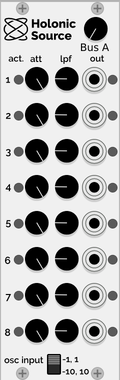
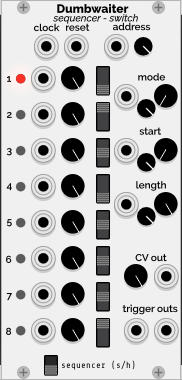
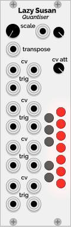
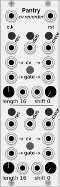
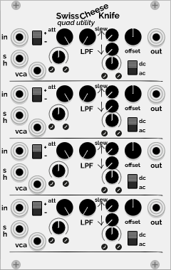
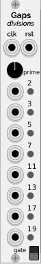
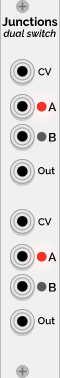

Holonic Systems modules for VCV Rack
Seven free modules for VCV Rack 2, first made for the Holon.ist iOS app: an OSC receiver, a sequencer and switch, a quantiser, a CV/gate looper, a quad utility, a clock divider and a switch.
Install: in VCV Rack, open the Library, find Holonic Systems and add it, or add it from its VCV Library page. Free, CC0.
The Holon.ist apps and the holon.ist and holonic.systems sites are gone. The modules still work: Holonic Source takes OSC from any app on port 9000.
Holonic Source

Receives OSC and turns it into control voltages: eight channels per module.
- Receiving bus
- Which bus (a to h) the module listens to. Several modules on different buses give up to 64 channels.
- Activity lights
- Light up when a message arrives for that channel on the module's bus.
- Attenuators
- Scale each channel.
- Low-pass filters
- An adjustable slew to smooth each signal.
- Outputs
- VCV Rack expects 0 to +10 V for unipolar and −5 to +5 V for bipolar signals. Holonic Source clips its outputs to −10 V … +10 V: scale the values in the sending app.
The OSC messages
Send to the computer's IP address, port 9000. The address is /<bus>/<channel>/<mode>:
<bus>:atoh<channel>:1to8<mode>:cvfor unipolar CV,cvbifor bipolar CV
For instance /a/2/cv is channel 2 of bus a, as unipolar CV. The argument is a float, in the −1 … 1 range or the −10 … 10 range depending on the module's range switch; with −1 … 1, values are multiplied by 10.
Discovery (mDNS / Bonjour)
The module announces itself on the network so OSC apps can find it:
- macOS: automatic while the module is loaded.
- Windows: install Apple's Bonjour SDK and check the Bonjour service is running, then run
Holonic_Source_windows.batfrom the plugin's folder (HolonicSystems-Freein your Rack plugins folder). Keep its window open while Rack runs. - Linux: make sure Avahi is running, then run
Holonic_Source_linux.shfrom the plugin's folder. Keep its window open while Rack runs.
Nothing arriving? Check that no firewall (Little Snitch, for instance) blocks incoming traffic to Rack, or skip discovery and send straight to the computer's IP and port 9000.
Dumbwaiter

An addressable 8-step sequencer and switch. One could see it as the lower row of the Doepfer A-155 with a large helping of A-154 functionality.
Lazy Susan

A quad quantiser with scales you edit. Your scales are saved with each patch. By default, the scales are the 7 standard modes: Ionian, Dorian, Phrygian, Lydian, Mixolydian, Aeolian, Locrian.
Serving suggestion: the Doepfer A-156 quantiser's minor mode is a melodic minor scale (CmMaj7). Choose the Dorian scale and sharpen the 7th to play along with your Eurorack.
Pantry

A dual CV/gate recorder and looper.
- Two channels, each recording CV and gate.
- Record: a full loop length, from CV or the button.
- Overdub while the CV or the button is held.
- Pattern length from 1 to 32, by CV.
- Pattern shift by CV.
Swiss Cheese Knife

A fully featured quad utility module.
- Inverter
- Inverts the input signal.
- Attenuator
- Scales the signal.
- Sample and hold
- Classic sample and hold.
- VCA
- With a response shape from linear to exponential.
- Low-pass filter
- A simple low-pass filter.
- Slew limiter
- Rise and fall times and the slope shape set separately.
- DC offset remover
- In AC mode, any DC offset is removed.
- Offset
- Adds an offset to the signal.
- Mixer
- The outputs are normalled, so it also mixes four signals.
Gaps

A clock divider with several sets of divisions:
- Integers: 2, 3, 4, 5, 6, 7, 8, 9
- Even: 2, 4, 6, 8, 10, 12, 14, 16
- Odd: 3, 5, 7, 9, 11, 13, 15, 17
- Prime: 2, 3, 5, 7, 11, 13, 17, 19
- Binary: 2, 4, 8, 16, 32, 64, 128, 256
- Random: probabilities 1/2, 1/3, 1/4, 1/5, 1/6, 1/7, 1/8, 1/9
- An 8-step clock sequencer
Four output modes:
- Gate: high until the next clock input trigger.
- Gate2: high half of the time (50 % duty cycle).
- Trig: a standard trigger on each input trigger.
- As is: high as long as the clock input is high.
And two ways to count: musical triggers on the first clock; mathematical triggers on the n-th (with a ratio of 3, on the 3rd clock).
Junctions

A simple dual switch: two inputs, one output. Two modes:
- Gate: input A while the control input is low, input B otherwise.
- Trig: each trigger flips between A and B.
Demo patches
Patches made with these modules ship in the plugin's demos folder, and are on GitHub:
They also use these plugins: Amalgamated Harmonics, Audible Instruments, Befaco, JW Modules, ML Modules, MSM, Stellare Link, Valley, Vult Modules (Free). More patches and templates: patchstorage.com/author/holmium.